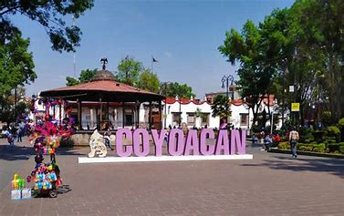
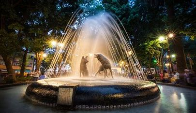
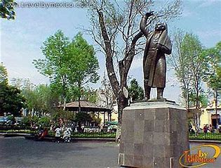
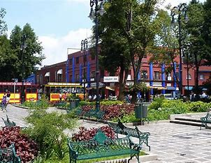

Historia de Coyoacán
Coyoacán es una de las delegaciones más antiguas de la Ciudad de México, fundada en el siglo XIII por los mexicas. Fue un importante centro político y religioso en la época prehispánica.
Lugares Turísticos en Coyoacán
- Parque de los Venados
- Museo Frida Kahlo
- Casa de la Cultura Jesús Reyes Heroles
- Viveros de Coyoacán
Gastronomía en Coyoacán
La gastronomía en Coyoacán es muy rica y variada, destacando platillos como los tacos de carnitas, los chiles rellenos y la sopa de tortilla.
Galería de Imágenes
- 
- 
- 
- 